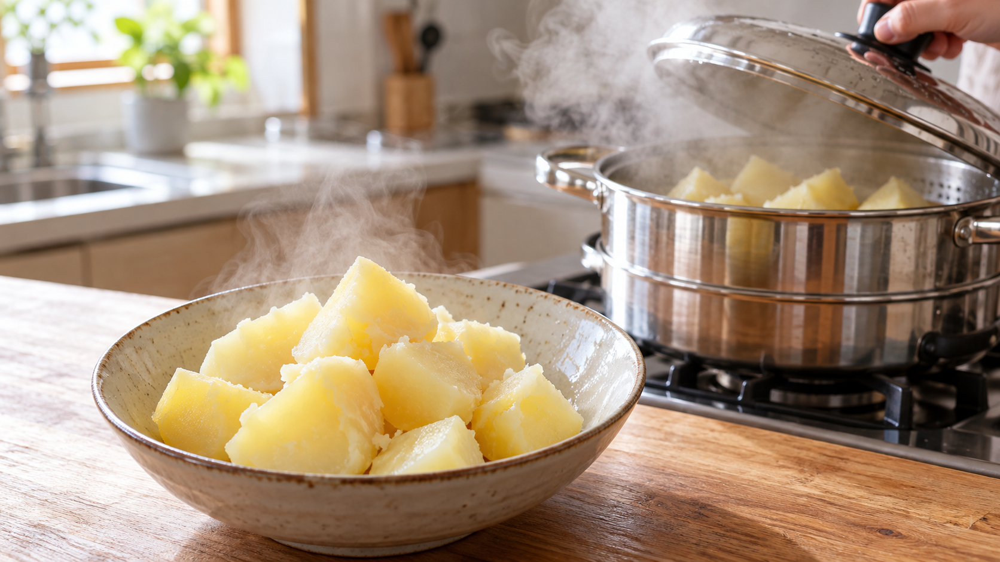

じゃがいもを冷蔵すると甘くなる｜低温糖化と揚げ調理の注意
買ったじゃがいもを冷蔵庫に入れたら、少し甘くなった気がする。これをフライドポテトにしてもいいのだろうか。
結論は、長く冷やすと糖が増える場合があるが、甘さの変化は品種や保存条件しだい。冷蔵したものを使うなら、まず蒸す・煮る料理が選びやすい。 冷蔵しただけで危険になるわけではない。
冷たい場所で、いもの中に起きること
じゃがいもを低温に長く置くと、蓄えていたでんぷんに由来する糖が増えることがある。増えやすいのはブドウ糖や果糖などの糖で、これらを還元糖と呼ぶ。この変化が「低温糖化」だ。酵素の働きを抑えたじゃがいもの研究では、低温貯蔵後の糖の蓄積が抑えられた。糖が増える仕組みの一部を示す結果だが、市販のすべての品種が同じ程度に甘くなるという意味ではない。(Plant Physiologyの研究)
研究で確認されたこと、家庭で考えたいこと
農林水産省が紹介する家庭調理の実験では、冷蔵したじゃがいもは炒めたときに焦げやすく、常温保存したものを炒めたときのアクリルアミド濃度は冷蔵品の半分以下だった。糖と、いもに含まれるアミノ酸の一部が高温で反応すると、この物質ができる。これはその実験条件で確認された結果であり、家庭のどの品種でも同じ割合になるとは限らない。(農林水産省)
一方、英国食品基準庁は、家庭での冷蔵保存は涼しい暗所での保存と比べ、アクリルアミドができやすくなる程度を実質的には増やさないとする研究を踏まえ、どちらの保存場所も選べると案内している。日本と英国の案内には違いがある。そこで家庭では、冷蔵そのものを怖がるより、何を作るかと、どれくらい濃く焼くかで判断したい。(英国食品基準庁)
今日作る、蒸しじゃがいも（2人分）
材料はじゃがいも2個（約300g）と塩少量。冷蔵していたいもも使える。
- いもを洗い、芽は周囲ごと取り、緑色の部分はなくなるまで皮をむく。全体の皮をむいて一口大に切る。苦味やえぐみを感じたら食べない。(農林水産省)
- 蒸し器の湯を沸かし、いもを並べてふたをする。約15〜20分を目安に蒸し、竹串が中心まですっと通るまで加熱する。
- 器に盛って塩を少し振る。切ってすぐ使わない分は包んで冷蔵し、早めに使い切る。(農林水産省)
揚げ物にするなら、薄切りや細切りのいもを15〜30分水にさらし、水気をしっかり拭いてから揚げる。濃い茶色になる前の薄い金色で取り出す。水気を拭くのは油はねも防ぐためだ。(米国食品医薬品局)
保存と献立をつなげる
丸ごとのじゃがいもは、暗く涼しく風通しのよい場所に置く。農林水産省は約10℃を目安とし、20℃以上では発芽や腐敗が進みやすいと案内している。涼しい場所を確保できず冷蔵した場合は、蒸し物や煮物に使うのも一案だ。煮る・蒸す調理ではアクリルアミドができにくい。(農林水産省・保存、農林水産省・調理)
まとめ
じゃがいもの甘さは保存条件で変わり得る。冷蔵したいもは蒸す・煮る料理にも生かし、揚げる日は水にさらして薄い金色で止める。保存場所だけで決めず、調理法と仕上がりの色まで見ると判断しやすい。